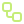
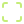

어떤 화면에서도
흐트러지지 않는 경험.
정보의 순서와 읽는 리듬을 기기마다 다시 생각합니다.
Independent digital studio · Seoul / Everywhere
DESIGN × ENGINEERING정교한 디자인 감각과 최정상 프론트엔드 엔지니어링이 만드는 에이전시급 웹
브랜드가 가진 한 끗을 발견하고,
빠르고 명료하게 작동하는
디지털 경험으로 만듭니다.
01 / Capabilities
아름다운 화면과 단단한 구조.
좋은 웹사이트에 필요한 두 가지를
함께 설계합니다.
정보의 순서와 읽는 리듬을 기기마다 다시 생각합니다.
가벼운 자산, 시맨틱 HTML, 검색을 위한 메타데이터. 기본을 성실하게 다룹니다.
MEASURE → REFINE → VERIFY

요청에서 검토까지, 팀에 맞는 자동화 흐름을 연결합니다.
INPUT → REVIEW → ACTION

타이포, 키보드 탐색, 작은 상태 변화까지 세심하게.
02 / Selected explorations
가능성을 보여 주기 위해 직접 설계한 가상 프로젝트입니다. 실제 고객 작업이나 성과가 아닙니다.
folio / overview ↗︎
나의 자산 · 예시 데이터
₩12,480,000JAN — AUG / SAMPLE
핀테크 대시보드 · 복잡한 금융 정보를 하나의 읽기 흐름으로.
A QUIETER WARDROBE.
COLLECTION / 001
패션 커머스 · 상품의 질감과 브랜드의 태도를 전하는 스토어.
relay / WORKFLOW BUILDER
자동화 솔루션 · 워크플로의 각 단계를 직관적으로 이해하고 검토하는 인터페이스.
03 / How we work
모호한 아이디어를 구체적인 결과물로.
매 단계 함께 확인하고,
다음으로 나아갑니다.
목표, 사용자, 콘텐츠와 필요한 기능을 정리하고 범위와 일정을 합의합니다.
구조와 시각 방향을 먼저 확인한 뒤, 실제 작동하는 화면으로 발전시킵니다.
모바일, 키보드와 주요 동작을 점검하고 편집 위치와 운영 문서를 전달합니다.
포트폴리오용 예시 견적 · 최종 금액과 일정은 프로젝트 범위에 따라 별도 협의합니다.
Landing
₩500,000 부터 / 예시
Business
₩800,000 부터 / 예시
Automation
별도 협의
도메인·호스팅·유료 도구·외부 API 비용, 촬영·카피라이팅·운영 유지보수는 제외됩니다. 세금 포함 여부와 최종 범위는 실제 계약에서 확정합니다.
Let’s make something considered.
콘셉트 포트폴리오 · 문의 작성은 로컬 데모입니다.